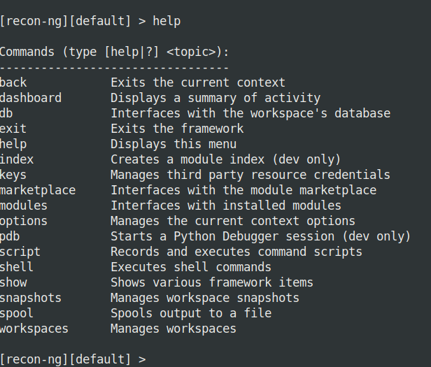

Recon-ng is a full-featured Web Reconnaissance framework written in Python. Complete with independent modules, database interaction, built in convenience functions, interactive help, and command completion, Recon-ng provides a powerful environment in which open source web-based reconnaissance can be conducted quickly and thoroughly.
Recon-ng has a look and feel similar to the Metasploit Framework, reducing the learning curve for leveraging the framework. However, it is quite different. Recon-ng is not intended to compete with existing frameworks, as it is designed exclusively for web-based open source reconnaissance. If you want to exploit, use the Metasploit Framework. If you want to Social Engineer, us the Social Engineer Toolkit. If you want to conduct reconnaissance, use Recon-ng! See the Usage Guide for more information.
